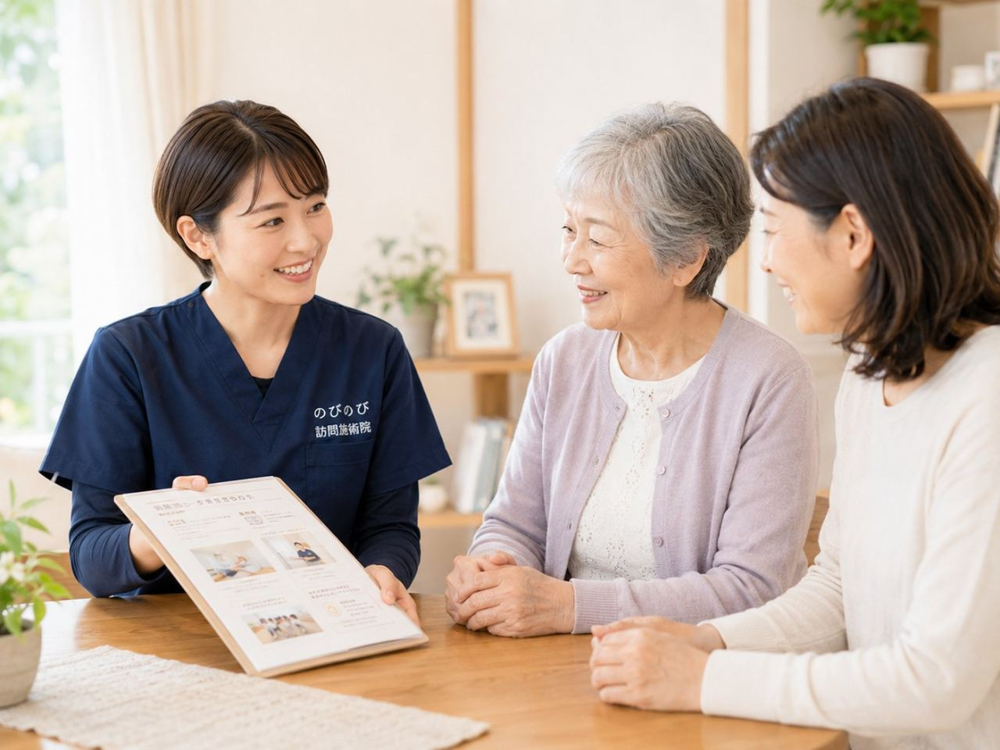
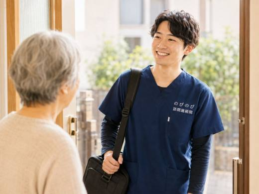
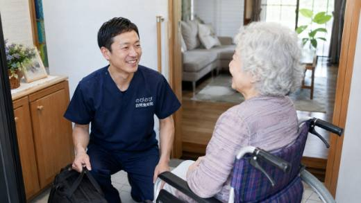
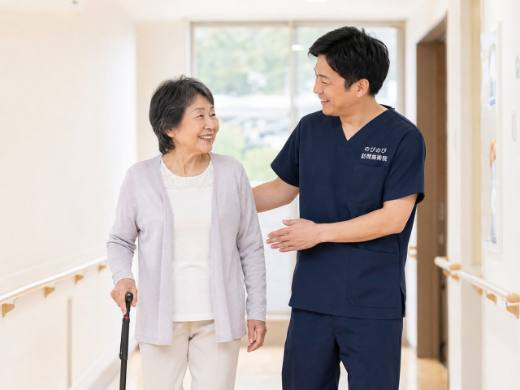

脳梗塞や脳出血のあと、手足の麻痺やつっぱり、動かしにくさが残り、そのうえ通院そのものが負担になっていませんか。池田市にお住まいのご本人やご家族から、こうした声をよくいただきます。のびのび訪問施術院は、暮らし慣れたご自宅へ伺い、固くなった筋肉を和らげて動きやすさを保つお手伝いをします。主治医の治療やリハビリはそのまま続けていただきながら、体をゆるめるケアだけを家で受けられる形です。
先に結論を書きます。後遺症でつらいのは、手足のこわばりや関節の固まり、動きにくさ、痛みやむくみなど。訪問鍼灸マッサージは、こうした慢性期の体に対して、こわばった筋肉を和らげ血のめぐりを促す補助を担います。診断や薬、リハビリの方針は主治医が決め、鍼灸はあくまでそれを補うもの。医師が必要と認め通院が難しい場合、はり・きゅうは医療保険の対象になり得ます。自己負担は1割の方で1回およそ395円（総額3,950円）が目安です。
池田市で、脳梗塞後遺症と向き合うご家庭へ
脳梗塞の後遺症で片麻痺が残った方にとっては、玄関から先の一歩一歩が外出をためらわせる負担になりがちです。「デイサービスの送迎はあるけれど、それ以外はほとんど家から出られない」というご相談を、池田のご家庭からよくいただきます。のびのび訪問施術院は、そうした通院の難しい状況にこそ寄り添う訪問鍼灸マッサージです。
退院してご自宅に戻ったあと、リハビリの頻度が減って体のこわばりが気になり始める時期があります。動かしにくい手足をそのままにすると、関節が固まり、日常の動作がさらに重くなっていきます。ご本人にもご家族にも、その変化はよく見えるからこそ不安が募るものです。
片麻痺・拘縮・しびれに、ご自宅でできること
脳梗塞の後遺症では、体の片側に力が入りにくくなる片麻痺、筋肉がこわばって関節が動かしにくくなる拘縮、手足のしびれといった症状が長く続くことがあります。のびのび訪問施術院では、はり・きゅうを軸に、こわばった筋肉をゆるめる手技や、関節の動く範囲を保つための機能訓練を組み合わせて、少しずつ動かせる範囲を保っていきます。手技も機能訓練も鍼灸に加えて行うもので、これらについて別途の料金はいただきません。
ただし、これは病気そのものを治すものではありません。あくまで後遺症とうまく付き合い、廃用による衰えを防いでいくための取り組みです。効き方には個人差があり、同じ施術でも感じ方や変化のペースは人それぞれです。症状ごとのより詳しいケアの考え方は脳梗塞・脳出血の後遺症のケアでも紹介しています。
退院後の在宅移行と、再発を防ぐ生活リズム
入院中は決まった時間に体を動かす習慣がありますが、家に戻るとその流れが途切れがちです。定期的に施術者が訪問することで、体を動かす機会が生活のなかに組み込まれ、昼夜のリズムや活動量を保ちやすくなります。血圧や体調の変化に気を配りながら、再発予防を意識した無理のない過ごし方を、ご本人・ご家族と一緒に整理していきます。
石橋阪大前駅の周辺や鉢塚、渋谷といったエリアも含め、池田市内は出張費なし・料金一律でお伺いします。「うちの地域まで来てもらえるのか」が気になる方は対応エリアはどこまで来てもらえる？もご覧ください。
ご家族の介助負担を、少しでも軽くするために
片麻痺のある方の介助は、起き上がりや移乗、着替えなど、日々の場面で体力を使います。呉服町や五月丘など市内各地で、車いすの移動ひとつをとってもご家庭ごとに事情が違います。訪問時には、その方の状態に合わせた体の動かし方や、ご家庭でできるちょっとした介助のコツもお伝えします。介護する側が一人で抱え込まずに済むよう、専門職が定期的に関わる意味は小さくありません。
池田市での訪問対応の全体像については池田市の訪問鍼灸マッサージにまとめています。あわせてご確認ください。
保険と料金のこと
のびのび訪問施術院は、はり・きゅうを施術のベースにしていて、保険はすべて鍼灸で算定します。ご利用には医師の同意書が必要ですが、要介護認定を受けていない方でも、医師が必要と認めれば利用でき、介護保険の区分支給限度額とは別枠なので併用もできます。はり・きゅうが医療保険の対象となるのは神経痛・リウマチ・頸肩腕症候群・五十肩・腰痛症・頸椎捻挫後遺症の6疾病で、麻痺にともなう肩や腰の痛み、手足のこわばりについて医師が施術を必要と認めた場合が対象になります。同一部位で医療保険のリハビリと鍼灸を同じ月に同時算定することはできません。
料金は1回の総額が3,950円で、自己負担は1割の方で約395円です。週2回のペースなら1割の方で月約3,160円が目安になります。仕組みや自己負担の詳しい内訳は料金はいくら？医療保険の自己負担額と仕組みでご確認いただけます。まずは池田のご自宅で、できることから一緒に始めていきましょう。
よくある質問
池田市にも来てもらえますか？
はい、池田市のご自宅へ伺います。池田駅・石橋阪大前駅の周辺から市内を広く対象としています。お住まいの住所を教えていただければ、対応できる範囲かその場でお答えします。
脳梗塞の後遺症でも保険が使えますか？
麻痺にともなう肩や腰の痛み、手足のこわばりについて医師が施術を必要と認め、通院が難しいと判断されれば、はり・きゅうが医療保険の対象になり得ます。医師の同意書が必要で、手続きはこちらでお手伝いします。まずは主治医にご相談ください。
病院やデイケアのリハビリはやめる必要がありますか？
いいえ、治療やリハビリはそのまま続けてください。訪問鍼灸はそれらと並んで、体のこわばりを和らげる補助の役割です。ただし同じ部位について、医療保険のリハビリと鍼灸を同じ時期に重ねて算定することはできないため、部位や時期は確認しながら進めます。
麻痺は鍼灸で治りますか？
麻痺そのものを消し去ることはできません。固くつっぱった筋肉を和らげ、血のめぐりを促し、関節が固まるのを防ぐ動きの補助を行います。感じ方や変化の出方には個人差があり、結果をお約束するものではありません。
発症したばかりでも受けられますか？
発症直後の急性期は対象になりません。状態が落ち着いた慢性期になってからのケアです。急な手足の脱力、ろれつが回らない、強い頭痛、顔のゆがみといったサインがあるときは、施術ではなくすぐに救急・受診を優先してください。
要介護認定を受けていなくても頼めますか？
はい。訪問鍼灸マッサージは医療保険を使うため、要介護認定がなくても、医師が必要と認めれば利用できます。介護保険の区分支給限度額とは別枠なので、ほかのサービスの枠とは別に併用できます。
費用はどのくらいかかりますか？
1回の施術は総額3,950円で、1割の方はおよそ395円が目安です。月額の目安は1割で週1回およそ1,580円、週2回およそ3,160円。別途の出張費はかからず、エリア内は同額です。お支払いは月ごとにまとめてで、明細をお渡しします。
施術者はどんな人が来ますか？
はり師・きゅう師の国家資格を持つ者が伺います。体の状態を追いながらケアするため、なるべく決まった担当者が繰り返し伺う形をとっています。顔なじみになることで、前回との違いなど小さな変化にも気づきやすくなります。

箕面市で脳梗塞の後遺症のケアをお探しの方へ｜訪問鍼灸マッサージという選択肢
続きを読む
尼崎市で脳梗塞の後遺症のケアをお探しの方へ｜自宅で続ける訪問鍼灸
続きを読む
吹田市で脳梗塞の後遺症のケアをお探しの方へ｜麻痺・こわばりに向き合う訪問鍼灸
続きを読む
都島区（大阪市）で脳梗塞の後遺症のケアをお探しの方へ｜訪問鍼灸マッサージ
続きを読む脳梗塞・脳出血の後遺症と訪問鍼灸マッサージ｜退院後、家で体を落とさないために
続きを読む